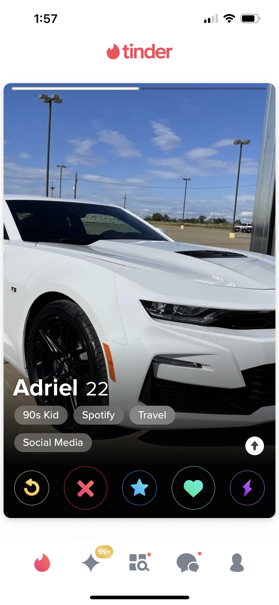
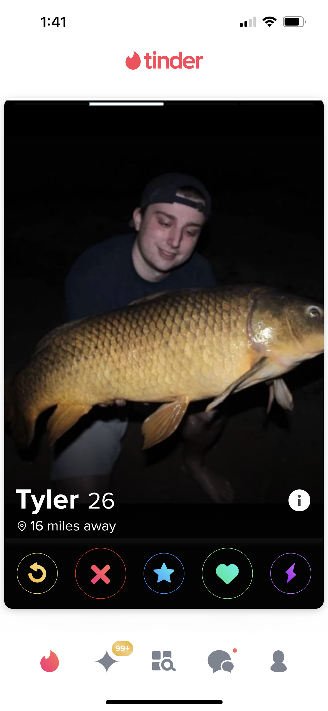
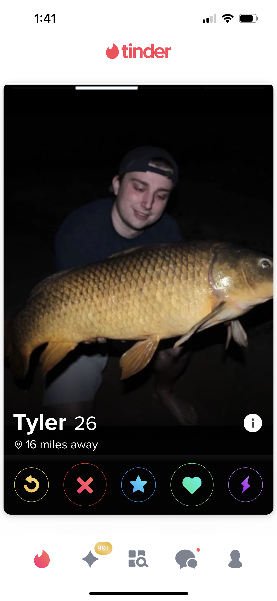
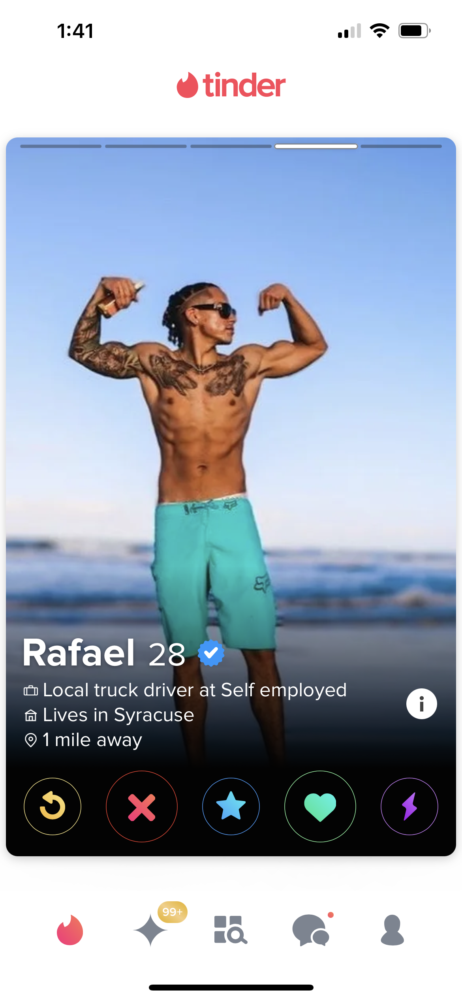
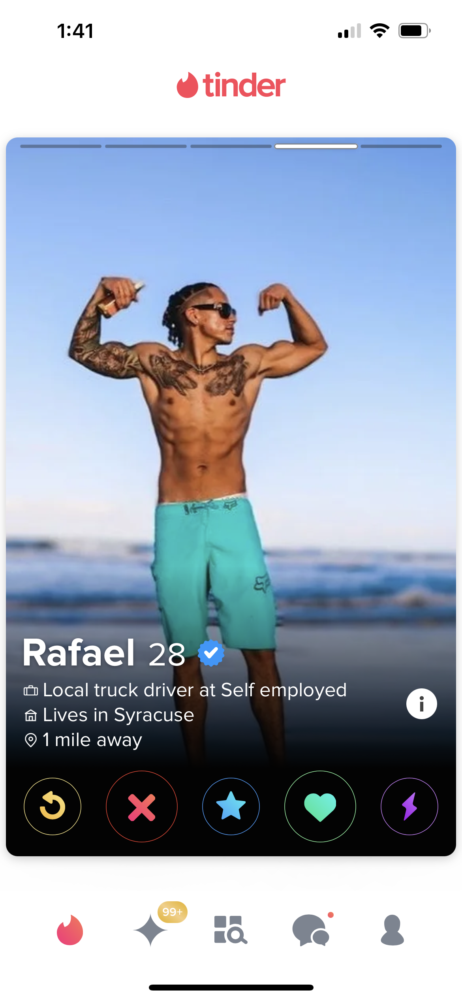

Do:
At least one (but not all) group photo(s) with some friends: Girls want to see that other people can stand being around you.
The occasional animal photo: Your dog is a great conversation starter! Throw a photo of you two together in the mix and let the chicks roll in with a classic “Aw your dog is so cute!” Works like a charm.
A group photo where you are the tallest person: I don’t care if you’re a short king and have to enlist your little brother to take a picture with you, include one photo where you are taller than others.
More than three photos: Girls like to have at least 4 to look through. Any less seems sketchy.
Candids: Photos of you laughing or ones where you look despite not being “ready” are so attractive to women! He’s hot and doesn’t have to try? Right swipe all day. But beware: we can tell when it’s posed/faked. If you’re going to fake a candid shot, it better be really well done.
Don’t:
All group photos: It makes it seem like you don’t want the girl to know which one you are. What are you hiding??
All selfies: You can have a MAX of one selfie among your photos, and even that is generous. It’s weird for guys to take selfies. It just is. Sorry. Have a friend snap a couple photos of you (but see below).
Too-posed pictures: Unless you are the president of the United States (or any country I suppose), you are not important enough to have high-quality uber-posed photos. It comes across as vain and frankly weird that you would enlist a friend for a photoshoot. Leave that to the ladies.
Fish: No one cares.
Hunting: No dead animals. Do you think you’re going to impress us with that slaughtered turkey? Not happening.
Filters: No snapchat filters, so VSCO filters, no grain or saturation tampering. It looks cheesy.
Inanimate objects: Tinder is not the place to flex your car or ATV or fancy bong. That’s a conversation piece, not the subject of a photo. And PLEASE. No guns. I can’t believe I even have to say that. But I do.
Flexing: Photos in which you are blatantly flexing for the camera is a turn off. Include a photo that happens to include your shoulders in some good lighting to show off your physique if that’s something you’re proud of, but no flexing photos and please God no flexing mirror photos.


 

 
